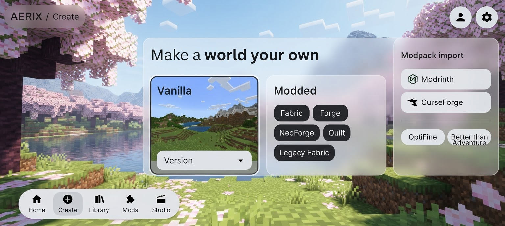
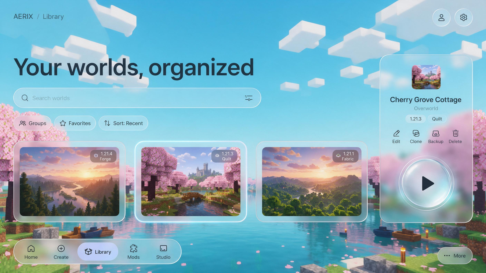
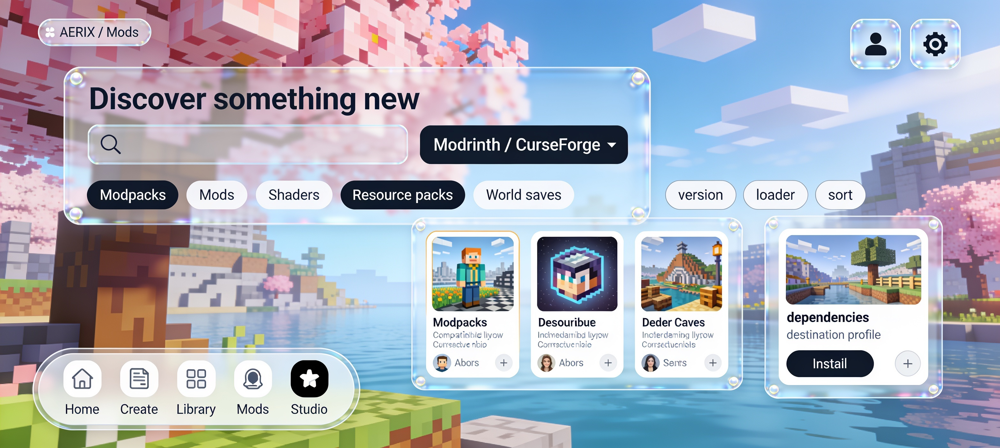

01 · Create
Replace the button wall with a compact world-creation workbench. Keep Vanilla, Fabric, Forge, NeoForge, Quilt, Legacy Fabric, modpack import, OptiFine, Better than Adventure, version and runtime choices.
Three replacement concepts for the Create, Library, and Mods tabs. They use a crisp daylight wallpaper, almost-clear glass with only a trace of blur, no wide top bar, black controls on pale surfaces, and a compact dock anchored at bottom left. Open any image for its full size.

Replace the button wall with a compact world-creation workbench. Keep Vanilla, Fabric, Forge, NeoForge, Quilt, Legacy Fabric, modpack import, OptiFine, Better than Adventure, version and runtime choices.

Replace wide management rows with world previews, search, groups, favorites and sort. The detail area retains select, edit, clone, backup, delete and launch.

Replace the crowded result row with browse cards and a separate detail pane. Retain Modrinth, optional personal-key CurseForge, modpacks, mods, shaders, resource packs, world saves, filters and installs.